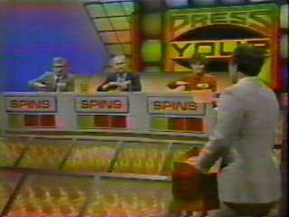
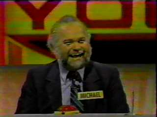
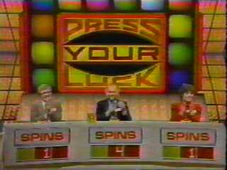
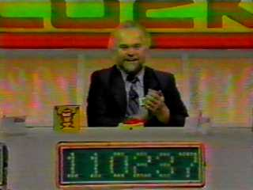
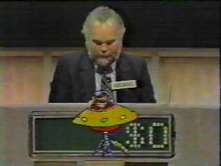

|
 Press Your LuckThe Michael Larsen IncidentWhen CBS first aired Press Your Luck in 1983, it quickly caught the attention of Michael Larsen, an unemployed Mister Softee ice cream truck driver from Ohio. It was winter time, and although Larsen wasn't selling many popsicles, he enjoyed watching contestants of average intelligence from around the country answer insipid trivia questions and gamble their winnings at the Big Board. The Big Board on Press Your Luck was a randomized grid, a roulette-style array of blinking boxes with different offerings: thousands of dollars in cash, fabulous prizes, dream vacations, free spins, and "Whammies" -- cartoon caricatures of a grinning, crudely drawn li'l red devil equipped with a pointed pitchfork suitable for pokes in the tuckus. If a player hit his plunger and accidentally landed on a Whammy, he'd go bankrupt and lose all the cash he'd accumulated, forcing him to start all over again from zero. Whammies were dispensed with horrible honking noises, screeches, and car-crash sounds. Not only did Whammies scream out that a contestant had gotten a little too greedy trying to gobble up big money, Whammies were obnoxious and humiliating to the participants. Michael found great solace watching people win, lose, and press their luck. On a good day, contestants could take home a few thousand dollars. Not bad, Larsen figured. And so he spent his last $100.00 on a discount airline ticket and flew to Los Angeles, hoping to be contestant. Press Your Luck executive producer Bill Carruthers remembers Larsen's audition for the show: "He really impressed us. He had charisma, he played the game very well. Here was this out of work ice cream guy who told us he loved the show so much he flew out on his own to try to get on." Bob Edwards, the contestant coordinator, had a few doubts: "There was something about the guy that worried me." Nothing unusual happened during the first half of the show. Larsen played the game well enough, but his performance was less than spectacular. At the end of round one, he'd been the recipient of a brutal Whammy, placing him in third place with zero dollars. But when the second round began, Larsen kicked into high gear. He answered a trivia question correctly and assumed control of the Big Board. Inside the director's booth, a wave of fear was slowly crashing over the producers. The broadcast pace of Press Your Luck required evenly-spaced commercial breaks, timed to coincide with a player eventually hitting a Whammy. The player would go bankrupt, the action would stop, and host Peter Tomarken could take a well-needed pause for a drink of water, a squirt of hair spray, and a dabble of make-up.
Back in his home state of Ohio, he didn't have just one television, he had several. Each television was hooked up to a private networking farm of VCRs in his living room. In November of 1983, he recorded every episode of Press Your Luck over the course of several weeks. He studied these videotapes, slowed them down, and froze the images to examine randomized tile sequences frame by frame. If you haven't already guessed, Michael Larsen discovered that the Big Board on Press Your Luck was not a randomized display, but an iterative, sequential pattern which gave itself away once you knew what to look for. Actually there were six patterns, each of which consisted of eighteen elements apiece -- and Michael Larsen had memorized them all. As long as his concentration and hand-eye coordination held out, Larsen would enjoy full control of the Big Board, and nothing would be left to chance. The one and only Whammy he'd received earlier was due to his inexperience with the tactile sensation and reaction time associated with one's plunger triggering the Big Board. When he passed control to other players, they hit Whammies almost instantly, demonstrating that the board was neither broken, nor the victim of adulterous tamperation. Michael Brockman, CBS's head of daytime programming, was at home when Press Your Luck production assistants buzzed his Batphone. "Something was very wrong," he remarked to TV Guide. "Here was this guy from nowhere, and he was hitting the bonus box every time. It was bedlam, I can tell you. And we couldn't stop this guy. He was going to own CBS in a few minutes. He kept going around the board and hitting that box." Back inside the control room, a decision was made: keep the tape running. The half-hour show was already over an hour. When Larsen's total reached $80,000, already a show record, the studio grew silent. Keep in mind: everyone in the audience believed Larsen was simply experiencing a bubble of good fortune destined to pop at any moment. Host Peter Tomarken remained incredulous throughout each of Larsen's forty-five consecutive and financially successful spins. Who in their right mind would risk so much money so fucking often? In the history of game shows to this point, there had never been anyone this lucky. The more money he accumulated and risked against Whammies, the more he looked like an insane gambling addict totally out of control. The host was freaked, the audience was freaked. There were difficult, heart-wrenching moments when even Larsen's opponents had concerned looks on their faces. One reached out and touched his elbow. Are you sure you want to keep doing this? In order for Michael to keep his winnings, he'd have to remain trapped on the stage of Press Your Luck forever. His situation was an infinite loop from which there was no escape: he'd learned how to trigger only plunger-hitting patterns nailing a cash prize and a free spin. According to the game's rules, this "free" spin would eventually have to be spun. In other words, each plunger push would lead to another. Nobody else could play, and Larsen himself could never stop playing. The only way to break this loop would be for Larsen to abandon any pretext of surefire pattern matching. He would literally have to Press His Luck like a regular contestant, plunging the Big Board onto a non-winning square, a non free-spinning square, and one possibly yielding a Whammy capable of draining him of every penny. When he pushed the plunger the last and final time -- Michael Larsen won a trip to the Bahamas. He stopped playing, to thunderous applause. CBS executives, scared that they were now victims of a Quiz Show-type scandal, hurriedly called a meeting with Brockman and the producers. The network would be reluctant to air the show without an investigation. Brockman pressed the CBS lawyers to prove that what Larsen was doing was illegal -- but they couldn't. What everyone was forced to acknowledge was that Larsen had figured out the game, and had won. It was like being a card counter at a blackjack table. Nowhere in the Press Your Luck rules did it say that you weren't allowed to pay attention. They sent him a check: $104,000 from his grand total of $110,237 and the rest in vacations he'd won to Kauai and elsewhere. CBS executives yanked down the Big Board, incorporated flat panel displays and software capable of generating genuinely random spins. They also instituted a $75,000 maximum cap on a player's winnings. Larsen paid $35,000 in taxes on his winnings, and "invested" the rest -- in a fraudulent real estate ponzi scheme involving nonexistent vacant land in Ohio. It didn't work out, sadly enough, and he hemorrhaged a full half of his entire life savings. Now even more desperate to get rich quick, Larsen took an interest in a local radio station contest. They were giving away a $30,000 jackpot to anyone who could produce "consecutive serial numbers" on two pieces of American currency. Larsen took the bait, and closed his bank account after withdrawing the remainder of his money (approximately $50,000) from the bank -- in one dollar bills. Larsen and his girlfriend spent several days sorting and categorizing the bills by hand, searching for matching portions of serial numbers. The money was stacked loosely in piles, spilling over the kitchen table from paper grocery bags and scattered along the floor. It looked like they sold pot. Everyone in the neighborhood knew Larsen's story, and they knew he kept a ridiculous amount of cash in the house. One evening while he and his woman were at a Christmas party, his home was broken into, and burglarized. Larsen returned late that night to find every last Press Your Luck dollar stolen. He flew into a violent rage directed at his common-law wife, blaming her and anyone else he could think of for the theft, except himself. She left him shortly thereafter. What would Michael Larsen do now? He was exhausted, and bankrupt, and seriously running out of options. He called the contestant coordinators of Press Your Luck, issuing a challenge: "I know you've added patterns to the board, but I bet I can beat you again. How about a tournament of champions?" Nobody was interested. Before you could conjure up images of William H. Macy's Jerry Lundegaard from Fargo, the FBI and Securities and Exchange Commission were suddenly a-knockin' on Larsen's chamber door, curious about his involvement with illegal securities dealings resulting from prior real estate dabblings. He fled the interview and hightailed it to Florida, where he died of throat cancer in 1999, still on the run from authorities. And that, by anyone's standards, is a Whammy. |
 On his next two spins, he landed on top-dollar squares for a total of $1250. In round two, he earned seven free spins. In no time at all, every single plunge was landing him on prized squares good for cash and additional free spins. Larsen increased his winnings from $2000 to $5000, then $14,000, $18,000 and $28,000. He was successfully avoiding Whammies like no other player before him. It was amazing. Each time he hit the plunger, he'd land on one of the only two squares affording both money and another chance to spin.
It
was like the Whammies didn't exist.
On his next two spins, he landed on top-dollar squares for a total of $1250. In round two, he earned seven free spins. In no time at all, every single plunge was landing him on prized squares good for cash and additional free spins. Larsen increased his winnings from $2000 to $5000, then $14,000, $18,000 and $28,000. He was successfully avoiding Whammies like no other player before him. It was amazing. Each time he hit the plunger, he'd land on one of the only two squares affording both money and another chance to spin.
It
was like the Whammies didn't exist. But there was something Michael Larsen hadn't told anyone.
But there was something Michael Larsen hadn't told anyone.  Larsen was winning so much money that the running total on his digital contestant podium no longer had sufficient enough real estate to display the dollar sign character. Perspiration dripped from his face. Under the hot lights, surrounded by a bloodthirsty arena of screaming audience members, bracketed by two pissed-off players who hadn't won a goddamn thing, staring straight into the Guy Smiley face of an agitated, loudmouth host who'd long since run out of different ways to proclaim Michael's performance "incredible" -- Mr. Larsen was experiencing a horrible secret side-effect of his plan which he could share with no one: he had failed to locate an exit strategy.
Larsen was winning so much money that the running total on his digital contestant podium no longer had sufficient enough real estate to display the dollar sign character. Perspiration dripped from his face. Under the hot lights, surrounded by a bloodthirsty arena of screaming audience members, bracketed by two pissed-off players who hadn't won a goddamn thing, staring straight into the Guy Smiley face of an agitated, loudmouth host who'd long since run out of different ways to proclaim Michael's performance "incredible" -- Mr. Larsen was experiencing a horrible secret side-effect of his plan which he could share with no one: he had failed to locate an exit strategy.